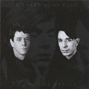
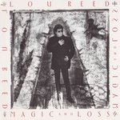
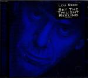
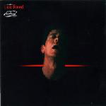
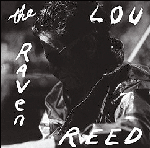
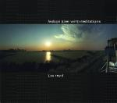
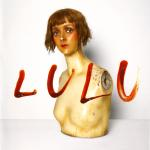

Lou Reed: A Life In Music (Part Three)
The first part of our tribute to the life and music of Lou Reed can be can be read here. The second part is here.
. . .
Part Three: 1990 to 2011, Songs for Drella to Lulu

Songs for Drella (1990)
Reed always seemed to rise the occasion when working with other great artists, from the Velvets to Bowie to his 80s band...no, Metallica doesn’t count. It’s hard to argue that his work with John Cale on the first two Velvet Underground albums wasn’t the peak of his career. When Andy Warhol, the unfortunate prophet of our trash celebrity age, died, he hooked up with Cale again for this one-off in tribute to their former mentor. This isn’t a major work, having been slapped together quickly with mainly just guitar and piano, but it’s an enjoyable set, even touching in places. Reed gets to grapple with death in a way that left him limp on the following record – perhaps a little emotional distance helped. You can feel him working hard again, and the competitive edge he brings to the record humanizes him, just when you’re about to conclude he has the temperament of a depressed walrus. (Alan Shulman)

Magic and Loss (1992)
I wish this album had turned out better than it did, because it obviously meant a lot to Lou, being inspired by the recent death of some close friends. Lyrically, Lou is confident and inspired, looking death square in the face and coming away appropriately confused and frustrated. But musically, he sounds less inspired and instead comes across as tired and, not surprisingly, kind of depressed. Only on the brilliant Sword of Damocles does he sound fully alive and stubbornly defiant. The rest is a persistently low-key affair that could have used the same kick in the pants to elevate it. Even the other uptempo songs sound formulaic and rote by his standards. The only other quintessentially Reed-ian moment is Harry's Circumcision, which is a spoken word song better heard than described. However, it’s not enough to salvage a failed but noble attempt at taking on the biggest subject there is. (Alan Shulman)
Set the Twilight Reeling (1996)
Lou tended to flourish when he was able to lighten up a bit. And while his existential dread produced some of his best art, his sense of humor produced some of his most enjoyable songs. Here you get both! A chocolate egg cream helped you deal with “pimps pissing in the streets”. I guess you could call this a love letter to his hometown, but it's a town where “they take your pants, your money, your name”. Consistency has been an issue with Lou since the Velvets broke up, but here most every song works as Lou settles into a wistful mode. He goes out rocking on the title track, though; lest you think he has gone soft. Ok, maybe Sex With Your Parents (Motherfucker) was the giveaway. Criminally overlooked, this is simply one of Lou’s best solo albums. (Alan Shulman)

Ecstasy (2000)
The one time I saw Lou Reed live it was a Tibet House Benefit at Carnegie Hall. He was the last performer and wasn’t going to play more than about three songs, and I was hoping for the Velvets, or at least some early solo stuff. He opened with Ecstasy, completely unfamiliar to me. Nevertheless, I was immediately drawn into it, and checked out the album of the same name the next day. It’s a quick 77 minutes (unless you don’t like the 18-minute Like A Possum, in which case it’s not), and although a few songs are forgettable, there’s a good deal work that seems to break new territory for a 58 year-old Reed. There’s an undeniable country influence on the album, but songs like Modern Dance, which sounds almost like Pavement, and the rollicking White Prism show Reed still has new ideas for song structure. The rhythm section, meanwhile, is top-notch throughout, covering up Reed’s bad ideas, spotlighting his best ones, and making this an enjoyable *rock* album all the way through. It may be late in his career, but Ecstasy is a gem. (Forrest Cardamenis)
The Raven (2003)
Pop music has seen many attempts to invoke the spirit of Poe, and few of them are any good. Reed had already gotten away with it once, in Sister Ray’s brief allusions, but consensus suggested that he wasn’t so lucky this time around. And not without reason. Amid the 36 tracks and two hours of The Raven in its full form (for the less dedicated there’s an abridged version, but as we're well into completist territory anyway that seems a bit pointless), there are such horrors as a student theatre-like take on The Tell Tale Heart, Willem Dafoe racing through the eponymous poem (entirely unnecessarily given that nobody else involved in the album was in much of a hurry) and Steve Buscemi doing jazz. But then, for a project that seems so very wrong, there’s actually quite a lot right with The Raven. Put it down to the quality of the guest list – Bowie, Ornette Coleman, and Antony, making his first steps from dodgy performance art to unlikely stardom – or just Reed’s innate good taste. Even when the content is bewildering (quite what purpose the, admittedly spooky, reworking of Perfect Day serves is anyone’s guess) the musical backdrop of lush strings and sax peals is unerringly attractive. (Mark Davison)
Hudson River Wind Meditations (2007)
In his final decades Lou Reed replaced the hedonism and chaos of his younger days for the contemplation and focus of T’ai chi. Given that it became such a monumental influence in his life, it’s only appropriate that T’ai chi directly informed his final solo album, Hudson River Wind Meditations. A tranquil, ambient record, it is a testimony to the inner peace that Reed discovered in later years.
But as his 2011 collaboration with Metallica proved, Reed wasn’t about to sign off with a record of ambient soundscapes. (David Coleman)
Lulu (2011)
A lot was said about this record when it was first released – a lot of it negative, and pretty much all of it said while scratching our heads – but now, two years later, we approach the album not just as a strange Lou Reed oddity, but his last one. And let’s forget for a minute whether or not everything – or anything – on this Metallica-backed double-disc monster of a conceptual record really worked out too well. What Lulu really demonstrates is that – even up until the last years of his life – there was hardly an artist more daring or willing to take a huge, embarrassing risks in order to make the music they wanted to make. Of course, Reed had little to prove to anyone at that point in his life, but how many other established artists can we say made potentially their most jarring and polarizing record at the end of their career, one that includes an album of pure static noise even? (Peter Quinton)
Going by the standard pattern of internet tragedies, and the horrified reception it received from critics and listeners, it was no surprise that merely a matter of minutes after Reed died some wag felt compelled to joke about the real tragedy of his death was that it made Lulu his swan song. But what a fitting swan song it is. Much like Reed’s career as a whole, Lulu is long, difficult and (despite the works of himself, Metallica and playwright GW Pabst all existing firmly in the pop culture subconscious) entirely unexpected. True, right from the off the idea of Reed collaborating with the creatively (and politically) conservative metal behemoth felt like a joke, and the album itself didn’t do much to alter this opinion. Now though, it’s not quite so funny; the raggedness of its meandering songwriting and his shot-to-pieces voice is heart-breaking, but on the other hand his notoriously bullish nature brought out the best in his collaborators – they hadn’t sounded this focused in years. And they’d never been this sensitive. The “tits and arms” severance of its opening may have been a bit of a cheap shock but as it progresses Lulu deepens (and/or wears the listener down completely). Buried right at the end of what could be Reed’s most unloved work is a strong contender for any list of his best songs, the genuinely extraordinary Junior Dad, whose swirling bass notes and catalogue of regrets may go on for almost twenty minutes, but don't outstay their welcome. (Mark Davison)
. . .
We hope you've enjoyed revisiting Lou Reed's extraordinary catalogue with us. Perhaps you've discovered something you'd previously overlooked, or maybe it's just inspired you to dig out a record you haven't heard in ages? All that remains is for us to say thank you to the man himself for creating such an inspirational body of work, one that will no doubt be enjoyed by legions of new listeners for decades to come.
8 November, 2013 - 09:57 — No Ripcord Staff